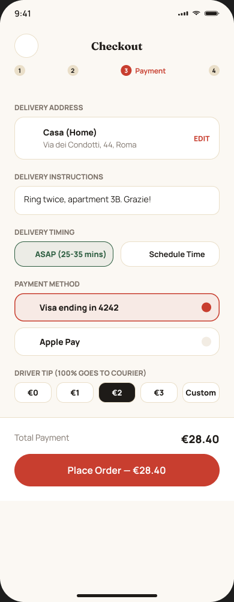
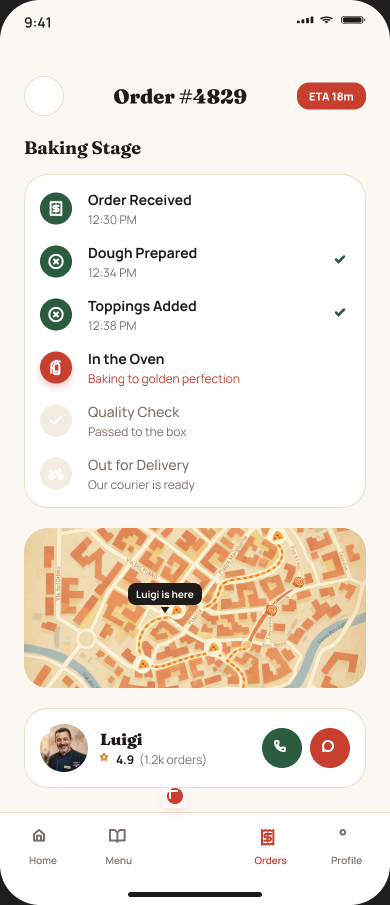

The challenge
Most delivery apps turn pizza into a transactional list. Dense menus, unclear sizing and hidden ingredient details remove the craft—and create hesitation for anyone managing preferences or allergies.
Pizzeria Artigianale
Pizzeria reimagines mobile food ordering as an interactive ritual. Instead of choosing from a static list, people build a pizza in real time, understand every ingredient and follow it from dough to doorstep.
Most delivery apps turn pizza into a transactional list. Dense menus, unclear sizing and hidden ingredient details remove the craft—and create hesitation for anyone managing preferences or allergies.
Make ordering feel like standing at a pizzaiolo's marble table: tactile, visual and personal. Every choice should update the pizza, flavor profile and price immediately, without sacrificing checkout speed.
03 / Product goals
Encourage premium ingredient upgrades through clear value and visual feedback.
Keep checkout focused, predictable and directly connected to the builder.
Support saved creations, rewards and an experience worth returning to.
Aim for an ordering experience that feels distinctive and easy to recommend.
04 / User insight
Text-first menus make customization feel abstract and uninspiring.
Unclear visual differences make it difficult to choose the right pizza.
Dietary information often appears too late or is hidden behind extra taps.
People cannot confirm that toppings look right before the order is placed.
05 / Journey blueprint
Browse classics, offers and saved creations.
Choose size, crust, sauce, cheese and toppings.
See flavor, allergens, price and visual changes live.
Confirm delivery, timing, payment and courier tip.
Follow each baking stage and the courier route.

06 / Signature interaction
07 / Key interfaces



08 / Design system
A restrained palette references tomatoes, basil, dough, charcoal and olive oil. Editorial serif headlines bring character; practical sans-serif copy keeps ordering clear.
09 / Reflection
Ingredient narratives turn product choices into value people can understand.
A conventional task becomes memorable when key moments receive visual drama.
Physical feedback works best when it confirms meaningful states and actions.